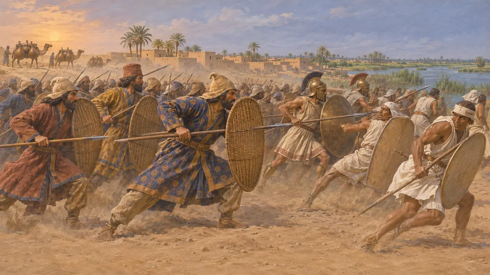
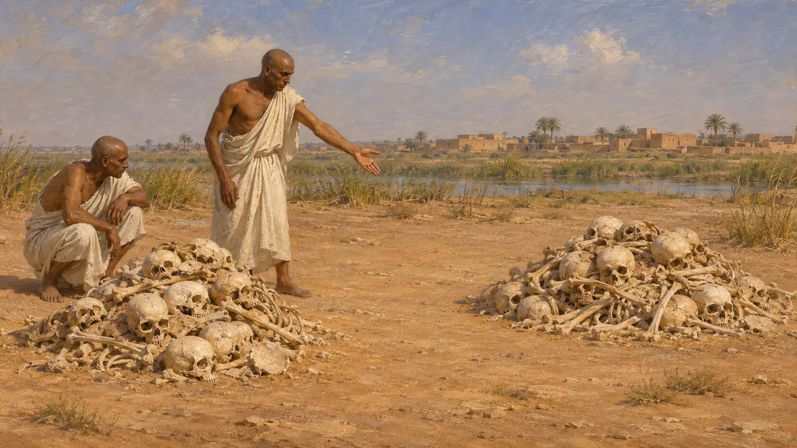
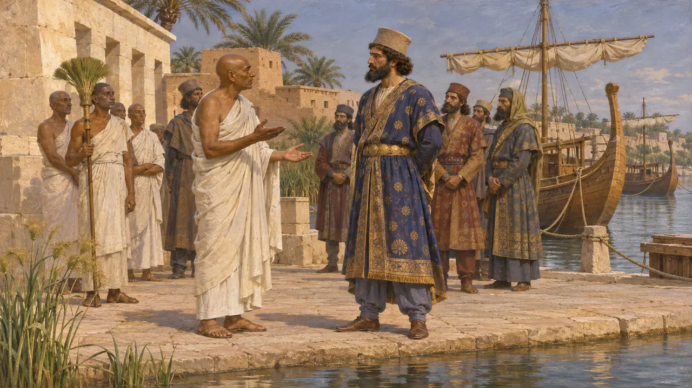
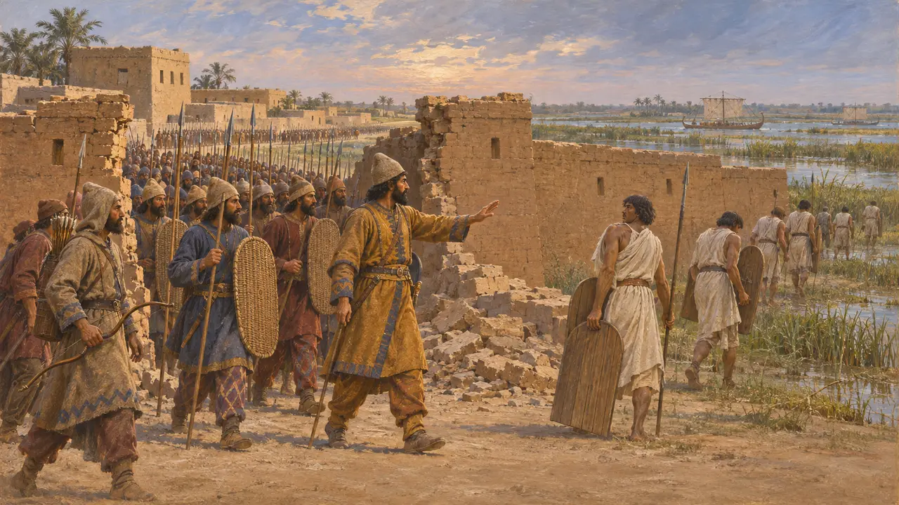
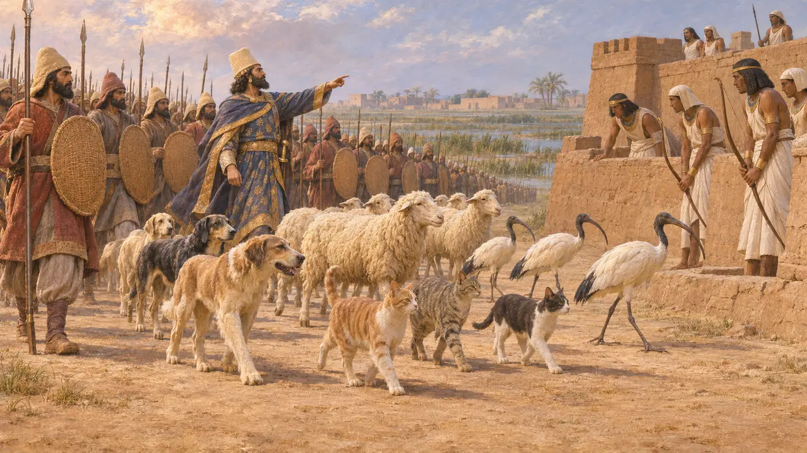

기원전 525년, 키루스의 아들 캄비세스가 나일강 삼각주의 동쪽 관문인 펠루시온 하구 근처에서 새 파라오 프삼티크 3세를 물리쳤다. 이 승리로 멤피스로 가는 길이 열렸고, 이집트는 페르시아 제국에 편입되어 1세기 넘게 그 일부로 남았다. 이 전투에 관해 알려진 거의 모든 내용은 헤로도토스에게서 나온다.
게임에서: 게임은 캄비세스가 프삼티크 3세와 그의 그리스 및 카리아 용병을 물리치고 이집트인이 멤피스로 달아나는 모습을 보여 준다. 헤로도토스를 따라 연대기는 군대의 규모를 제시하지 않으며, 크테시아스가 말한 사상자 수는 믿기 어렵다고 본다.


파네스의 아들들과 뼈의 들판
고대의 전승헤로도토스에 따르면 전투에 앞서 프삼티크의 그리스 용병과 카리아 용병은 파네스의 아들들을 아버지가 보는 앞에서 죽이고, 그 피를 포도주와 물에 섞어 그릇에 담아 마셨다. 그는 훗날 전사자들의 뼈가 따로따로 쌓여 있는 것을 보았다고 말한다. 현지 사람들은 이집트인의 두개골은 단단하고 페르시아인의 두개골은 얇다고 알려 주었다. 이집트인은 머리를 밀고 햇볕에 내놓지만 페르시아인은 펠트 모자를 쓰기 때문이라는 설명이었고, 그는 이를 받아들였다.
Herodotus 3.11-12

이집트 기록이 보여 주는 것
당대 기록이 전투를 서술한 이집트 문헌은 없다. 현재 바티칸 박물관에 있는 우자호레스네트의 비문 조각상을 보면, 그는 아마시스와 프삼티크 3세 치하에서 왕실 함선을 지휘했고, 이후 캄비세스를 섬기는 수석 의관이 되어 그의 이집트식 왕호를 짓는 일을 도왔다. 비문은 캄비세스가 온갖 땅의 이방인들과 함께 이집트에 왔다고 말하지만, 전투 자체에 대해서는 아무것도 전하지 않는다.
Statue of Udjahorresnet (Vatican Museums)

병력 규모, 배신, 그리고 연대
분쟁 중헤로도토스는 군대의 규모를 밝히지 않는다. 기원전 400년경에 글을 쓴 크테시아스는 이집트인 5만 명과 페르시아인 7,000명이 죽었고, 콤바피스라는 환관이 이집트의 방어를 배신했다고 말한다. 그러나 그는 파라오를 아미르타이오스라고도 부르며, 역사가들은 그의 수치를 추측으로 본다. 일부는 우자호레스네트의 함대가 한쪽으로 비켜섰는지 의문을 제기하지만, 그 자신의 글에는 그런 말이 없다. 전투는 보통 기원전 525년으로 보지만, 526년을 주장하는 학자도 있다.
Ctesias, Persica (Photius epitome); P. Briant, From Cyrus to Alexander, 2002

신성한 동물들의 이야기
후대의 전설기원후 2세기의 저술가 폴리아이노스는 캄비세스가 펠루시온에서 이집트인이 신성시하는 개, 양, 고양이, 따오기 등의 동물을 군대 앞에 세워, 수비군이 그 동물들을 다칠까 두려워 활을 쏘지 못하게 했다고 말한다. 이 이야기는 전투가 있은 지 700년쯤 뒤에 처음 나타나며 그보다 앞선 어떤 저술가에게서도 발견되지 않는다. 페르시아인이 방패에 고양이를 얹고 갔다는 현대의 그림은 한술 더 뜬 것이다.
Polyaenus, Stratagems 7.9
출처
- Herodotus 3.1-16
- Ctesias, Persica (Photius epitome)
- Statue of Udjahorresnet (Vatican Museums)
- Polyaenus, Stratagems 7.9
- P. Briant, From Cyrus to Alexander, 2002
- D. Asheri, A. Lloyd, A. Corcella, A Commentary on Herodotus Books I-IV, 2007